near.max_position_in_range = 0.65 で発生した ENTRY_CANDIDATE
32 件（仮想ENTRY成立 32 件）× 4 案 ／
WARNING 開始条件は VARIANT A に固定 ／
生成日 2026-08-11
warning_low を割ったあとの処理だけ。
WARNING へ入る条件（研究上の基準として VARIANT A に固定）、
reference_high の定義、押し安値の取り方、トレーリング、初期STOP、
ENTRY ロジック、near.max_position_in_range = 0.65 は
4 案とも完全に同一で、今回いっさい触っていない。warning_start_study の結論は保留のままである。warning_low を割った
という事実も引けるまで確定しないため。warning_low に STOP 注文を
置いていた場合の参考価格は別列（cases[CASE2]）に分けてあり、
主分析とは混ぜていない。warning_low と original_range_upper だけで、%閾値を持たない。warning_low を割っても降りないreference_high 再突破か active_stop 到達まで待つclose < warning_low なら必ず low < warning_low でもあるので、V2 の成立日は V1 の成立日と同じかそれより後、V3 はさらに後になる。つまり V1 ⊇ V2 ⊇ V3 で、「どこまで割れを許容するか」の一本の軸になっている。| 指標 | 値 | 件数 | 注記 |
|---|---|---|---|
| 対象の警戒足（WARNING 開始条件は VARIANT A 固定） | 100% | 31 / 31 | WARNING が発生したイベントは 22 件 |
| warning_low を日中に割った警戒足 | 29/31 (94%) | 29 / 31 | EXIT VARIANT 1 のトリガー。ここが 3 案の出発点 |
| warning_low を終値で割った警戒足 | 26/31 (84%) | 26 / 31 | EXIT VARIANT 2 のトリガー |
| 日中に割ったが、その日の終値では回復した警戒足 | 8/29 (28%) | 8 / 29 | 初回の日中割れ当日に close >= warning_low へ戻した。V1 と V2 が最初に分かれる形 |
| 日中に割ったが、WARNING でいる間に終値では一度も割らなかった警戒足 | 3/29 (10%) | 3 / 29 | V1 は降りるが V2/V3 は最後まで降りない形（§9 の候補） |
| 終値で割ったが、元レンジ上限より上にいた警戒足 | 5/26 (19%) | 5 / 26 | V2 は降りるが V3 は降りない形。V2 と V3 が分かれる場所 |
| warning_low と元レンジ上限の両方を終値で割った警戒足 | 21/31 (68%) | 21 / 31 | EXIT VARIANT 3 のトリガー |
| 日中割れから終値割れまでの営業日数（中央値） | 0.0 日 | 26 / 26 | 0 なら同じ日に日中割れと終値割れ（V1 と V2 の EXIT 日が同じ） |
| 終値割れから上限割れまでの営業日数（中央値） | 0.0 日 | 21 / 21 | 0 なら同じ日に成立（V2 と V3 の EXIT 日が同じ） |
| 寄りが既に warning_low 以下だった日中割れ | 17/29 (59%) | 17 / 29 | warning_low での約定は仮定できない（§14） |
| 終値割れと reference_high 再突破が同日だった警戒足 | 3/31 (10%) | 3 / 31 | 既存の REHIGH ロジックを変更しない制約から再高値更新を優先した件（解釈(e)） |
| 日中割れがあったイベント | 22/32 (69%) | 22 / 32 | イベント単位。分母は仮想ENTRYできた 32 件 |
| 終値割れがあったイベント | 22/32 (69%) | 22 / 32 | |
| 上限割れまで行ったイベント | 19/32 (59%) | 19 / 32 |
| 指標 | 参考 降りない | V1 LOW_BREAK | V2 CLOSE_BREAK | V3 STRUCTURAL_BREAK | 注記 |
|---|---|---|---|---|---|
| 前提（4案で同一） | |||||
| 対象イベント数 | 32 | 32 | 32 | 32 | near.max_position_in_range=0.65 で発生した ENTRY_CANDIDATE。前回と同一 |
| 元レンジ上限を終値突破した件数 | 22/32 (69%) | 22/32 (69%) | 22/32 (69%) | 22/32 (69%) | 突破の判定も WARNING 開始条件（VARIANT A）も 4 案で同じ |
| 最初の警戒足が出た件数 | 22/32 (69%) | 22/32 (69%) | 22/32 (69%) | 22/32 (69%) | 最初の警戒足は 4 案で必ず同一。違いはそのあとだけ |
| 警戒足の総本数 | 31 本 | 24 本 | 26 本 | 26 本 | 早く降りる案ほど 2 本目以降の警戒足に到達しないので減る |
| EXIT の内訳 | |||||
| 利確候補（warning_low 割れ）で降りた件数 | 0/32 (0%) | 16/32 (50%) | 13/32 (41%) | 13/32 (41%) | 参考基準は定義上 0 件 |
| 初期STOPで降りた件数 | 24/32 (75%) | 14/32 (44%) | 14/32 (44%) | 14/32 (44%) | 初期STOP = range_lower*0.995。4 案とも同じ水準 |
| trail STOPで降りた件数 | 7/32 (22%) | 2/32 (6%) | 5/32 (16%) | 5/32 (16%) | trail が成立したうえで引き上げ後の STOP に当たった件 |
| 追跡終端まで保有継続 | 1/32 (3%) | 0/32 (0%) | 0/32 (0%) | 0/32 (0%) | |
| 保有日数の中央値 | 7.5 日 | 6.0 日 | 6.5 日 | 6.5 日 | 仮想ENTRY日を 1 日目とする |
| §11 STUCK_IN_WARNING | |||||
| STUCK_IN_WARNING のイベント件数 | 13/32 (41%) | 0/32 (0%) | 5/32 (16%) | 7/32 (22%) | warning_low を日中に割ったのに WARNING に留まった日が 1 日以上あった件。V2/V3 では意図した猶予でもあるので「多い＝悪い」ではない |
| 滞留した警戒足の本数 | 19 本 | 0 本 | 5 本 | 7 本 | |
| WARNING 滞留日数の中央値 | 3.0 日 | － | 2.0 日 | 2.0 日 | 日中割れの日から WARNING を抜けるまでの営業日数 |
| WARNING 滞留日数の最大 | 25 日 | － | 3 日 | 3 日 | |
| 割ったまま何も起きず初期STOPまで戻った件数 | 14/32 (44%) | 4/32 (12%) | 4/32 (12%) | 4/32 (12%) | 前回いちばん不自然だった形。warning_low を割ったのに降りも上げもしなかった件 |
| WARNING 中に一度でも +5% 以上の含み益があった件数 | 13/22 (59%) | 13/22 (59%) | 13/22 (59%) | 13/22 (59%) | 含み益は 4 案共通の分母（降りない解釈での最大含み益）で測るので値は同じ |
| WARNING 中に一度でも +10% 以上の含み益があった件数 | 6/22 (27%) | 6/22 (27%) | 6/22 (27%) | 6/22 (27%) | |
| §12 利益保持（参考値） | |||||
| 仮想EXIT件数（追跡終端を除く） | 31/32 (97%) | 32/32 (100%) | 32/32 (100%) | 32/32 (100%) | 約定価格は保証されない。母数 32 件なので順位づけには使わない |
| 仮想リターンの中央値 | -3.77% | -2.42% | -2.69% | -2.85% | 主分析の約定はトリガー翌営業日の始値（4 案とも同じ約束） |
| 最大含み益の中央値 | +4.29% | +4.18% | +4.29% | +4.29% | その案が実際に保有していた期間内の最大含み益 |
| EXIT時リターンの中央値（勝ち負け別・勝ち） | +1.93% | +2.89% | +1.93% | +2.18% | |
| EXIT時リターンの中央値（勝ち負け別・負け） | -4.84% | -3.24% | -3.26% | -3.28% | |
| 最大含み益からEXITまでの吐き出し幅（中央値） | 9.00pt | 5.24pt | 6.53pt | 6.53pt | 最大含み益 − 最終リターン |
| +3%以上まで伸びた後に損失EXITとなった件数 | 14/21 (67%) | 10/21 (48%) | 12/21 (57%) | 12/21 (57%) | 分母は 4 案共通（降りない解釈での最大含み益）なので件数を直接比べられる |
| +5%以上まで伸びた後に損失EXITとなった件数 | 6/13 (46%) | 4/13 (31%) | 4/13 (31%) | 4/13 (31%) | 分母は 4 案共通（降りない解釈での最大含み益）なので件数を直接比べられる |
| +10%以上まで伸びた後に利益の大半を失った件数 | 5/6 (83%) | 5/6 (83%) | 5/6 (83%) | 4/6 (67%) | 「大半＝過半」をそのまま数式にした集計上の定義。売買閾値ではない |
| 最大含み益+5%以上のケースで残せた割合（中央値） | 1%（13件） | 10%（13件） | 10%（13件） | 10%（13件） | 最終リターン ÷ 最大含み益。100% なら天井で降りられたということ |
| 最大含み益+10%以上のケースで残せた割合（中央値） | 11%（6件） | 18%（6件） | 13%（6件） | 13%（6件） | 最終リターン ÷ 最大含み益。100% なら天井で降りられたということ |
| §13 EXIT後の伸び | |||||
| EXIT価格からさらに +3% 以上伸びた件数 | －（利確候補で降りない） | 6/16 (38%) | 4/13 (31%) | 3/13 (23%) | 分母はその案が利確候補で降りた件数。伸びを測る窓は「降りない解釈でも保有が続いていた期間」に揃えてある |
| EXIT価格からさらに +5% 以上伸びた件数 | －（利確候補で降りない） | 5/16 (31%) | 4/13 (31%) | 3/13 (23%) | 分母はその案が利確候補で降りた件数。伸びを測る窓は「降りない解釈でも保有が続いていた期間」に揃えてある |
| EXIT価格からさらに +10% 以上伸びた件数 | －（利確候補で降りない） | 3/16 (19%) | 3/13 (23%) | 2/13 (15%) | 分母はその案が利確候補で降りた件数。伸びを測る窓は「降りない解釈でも保有が続いていた期間」に揃えてある |
| EXIT後の最大上昇率（中央値・EXIT価格比） | －（利確候補で降りない） | +4.90% | +3.02% | +0.26% | 厳しすぎる EXIT の副作用を測る主指標 |
| §14 ギャップ | |||||
| EXITシグナル件数 | 0 件（利確候補で降りない） | 16 件 | 13 件 | 13 件 | |
| 翌営業日始値がトリガー基準より下だった件数 | － | 10/16 (62%) | 5/13 (38%) | 5/13 (38%) | 基準は V1 が warning_low、V2/V3 がトリガー日の終値 |
| ギャップ率の中央値 | － | -1.00% | +0.00% | +0.42% | |
| 最大の下方ギャップ | － | -3.66% | -4.28% | -4.28% | |
| 翌営業日がなく約定を置けなかった件数 | 0 件 | 0 件 | 0 件 | 0 件 | 追跡窓（60営業日）の終端でトリガーした件。終値で代用しているが約定の主張ではない |
| 参考: V1 を warning_low の STOP 注文で約定させた場合の中央値 | -1.82% | -1.82% | -1.82% | -1.82% | cases[CASE2] は 4 案とも同じ意味の参考値で、「最初の日中割れを warning_low で降りられた場合」。主分析とは混ぜない |
| 銘柄 | シグナル | 案 | 日中割れ | その日の終値 | 終値では最後まで割らず | V1 | この案 | 差 | 割れ後の最大含み益 | 新高値 | trail |
|---|---|---|---|---|---|---|---|---|---|---|---|
| 6361 荏原 | 2026-04-20 | V3 STRUCTURAL_BREAK | 2026-04-30 | 終値も割れ | ○ | +2.89% | +10.57% | +7.68pt | +16.95% | ● | ○ |
| 8015 豊田通商 | 2026-02-18 | V3 STRUCTURAL_BREAK | 2026-02-27 | 終値も割れ | ○ | -0.93% | +3.53% | +4.45pt | +4.80% | ○ | ○ |
| 2644 GX 半導体関連-日本株式 ETF | 2026-02-18 | V2 CLOSE_BREAK | 2026-02-27 | 終値回復 | ○ | +0.27% | +1.64% | +1.37pt | +2.56% | ○ | ○ |
| 6770 アルプスアルパイン | 2026-02-12 | V2 CLOSE_BREAK | 2026-02-26 | 終値も割れ | ○ | +6.84% | +6.84% | +0.00pt | +8.27% | ○ | ○ |
| 6770 アルプスアルパイン | 2026-02-16 | V2 CLOSE_BREAK | 2026-02-26 | 終値も割れ | ○ | +5.94% | +5.94% | +0.00pt | +7.35% | ○ | ○ |
| 6770 アルプスアルパイン | 2026-02-12 | V3 STRUCTURAL_BREAK | 2026-02-26 | 終値も割れ | ○ | +6.84% | +6.84% | +0.00pt | +8.27% | ○ | ○ |
| 6770 アルプスアルパイン | 2026-02-16 | V3 STRUCTURAL_BREAK | 2026-02-26 | 終値も割れ | ○ | +5.94% | +5.94% | +0.00pt | +7.35% | ○ | ○ |
| 8058 三菱商事 | 2026-02-19 | V2 CLOSE_BREAK | 2026-02-27 | 終値回復 | ● | +2.93% | +1.93% | -1.00pt | +12.10% | ● | ○ |
| 8058 三菱商事 | 2026-02-19 | V3 STRUCTURAL_BREAK | 2026-02-27 | 終値回復 | ● | +2.93% | +1.93% | -1.00pt | +12.10% | ● | ○ |
| 8306 三菱UFJ | 2026-06-12 | V2 CLOSE_BREAK | 2026-06-22 | 終値回復 | ○ | +3.25% | +1.36% | -1.89pt | +18.01% | ● | ○ |
| 8306 三菱UFJ | 2026-06-12 | V3 STRUCTURAL_BREAK | 2026-06-22 | 終値回復 | ○ | +3.25% | +1.36% | -1.89pt | +18.01% | ● | ○ |
| 9104 商船三井 | 2026-03-25 | V2 CLOSE_BREAK | 2026-04-01 | 終値回復 | ● | +1.74% | -2.56% | -4.30pt | +4.21% | ● | ○ |
| 9104 商船三井 | 2026-03-25 | V3 STRUCTURAL_BREAK | 2026-04-01 | 終値回復 | ● | +1.74% | -2.56% | -4.30pt | +4.21% | ● | ○ |
| 200A NEXT FUNDS 日経半導体株指数連動型上場投信 | 2026-02-19 | V2 CLOSE_BREAK | 2026-02-27 | 終値回復 | ○ | -0.03% | -4.55% | -4.52pt | +3.99% | ○ | ○ |
| 200A NEXT FUNDS 日経半導体株指数連動型上場投信 | 2026-02-19 | V3 STRUCTURAL_BREAK | 2026-02-27 | 終値回復 | ○ | -0.03% | -4.55% | -4.52pt | +3.99% | ○ | ○ |
| 2644 GX 半導体関連-日本株式 ETF | 2026-02-18 | V3 STRUCTURAL_BREAK | 2026-02-27 | 終値回復 | ○ | +0.27% | -4.46% | -4.73pt | +2.56% | ○ | ○ |
| 7182 ゆうちょ銀行 | 2026-06-09 | V2 CLOSE_BREAK | 2026-06-22 | 終値回復 | ○ | +3.23% | -3.26% | -6.49pt | +3.29% | ○ | ○ |
| 7182 ゆうちょ銀行 | 2026-06-09 | V3 STRUCTURAL_BREAK | 2026-06-22 | 終値回復 | ○ | +3.23% | -3.26% | -6.49pt | +3.29% | ○ | ○ |
| 銘柄 | シグナル | 案 | V1のEXIT | この案のEXIT | 待った日数 | V1 | この案 | 差 | 最大含み益 | 元レンジ内へ | 初期STOP | EXIT時ギャップ |
|---|---|---|---|---|---|---|---|---|---|---|---|---|
| 7182 ゆうちょ銀行 | 2026-06-09 | V2 CLOSE_BREAK | 2026-06-23 | 2026-06-25 | 2 | +3.23% | -3.26% | -6.49pt | +3.76% | ● | ○ | -0.55% |
| 7182 ゆうちょ銀行 | 2026-06-09 | V3 STRUCTURAL_BREAK | 2026-06-23 | 2026-06-25 | 2 | +3.23% | -3.26% | -6.49pt | +3.76% | ● | ○ | -0.55% |
| 2644 GX 半導体関連-日本株式 ETF | 2026-02-18 | V3 STRUCTURAL_BREAK | 2026-03-02 | 2026-03-04 | 2 | +0.27% | -4.46% | -4.73pt | +6.49% | ● | ○ | -4.18% |
| 200A NEXT FUNDS 日経半導体株指数連動型上場投信 | 2026-02-19 | V2 CLOSE_BREAK | 2026-03-02 | 2026-03-04 | 2 | -0.03% | -4.55% | -4.52pt | +7.77% | ● | ○ | -4.28% |
| 200A NEXT FUNDS 日経半導体株指数連動型上場投信 | 2026-02-19 | V3 STRUCTURAL_BREAK | 2026-03-02 | 2026-03-04 | 2 | -0.03% | -4.55% | -4.52pt | +7.77% | ● | ○ | -4.28% |
| 9104 商船三井 | 2026-03-25 | V2 CLOSE_BREAK | 2026-04-02 | 2026-04-13 | 7 | +1.74% | -2.56% | -4.30pt | +4.21% | ○ | ○ | +0.42% |
| 9104 商船三井 | 2026-03-25 | V3 STRUCTURAL_BREAK | 2026-04-02 | 2026-04-13 | 7 | +1.74% | -2.56% | -4.30pt | +4.21% | ○ | ○ | +0.42% |
| 8306 三菱UFJ | 2026-06-12 | V2 CLOSE_BREAK | 2026-06-23 | 2026-06-25 | 2 | +3.25% | +1.36% | -1.89pt | +5.04% | ● | ○ | +2.18% |
| 8306 三菱UFJ | 2026-06-12 | V3 STRUCTURAL_BREAK | 2026-06-23 | 2026-06-25 | 2 | +3.25% | +1.36% | -1.89pt | +5.04% | ● | ○ | +2.18% |
| 8058 三菱商事 | 2026-02-19 | V2 CLOSE_BREAK | 2026-03-02 | 2026-03-04 | 2 | +2.93% | +1.93% | -1.00pt | +12.10% | ○ | ○ | － |
| 8058 三菱商事 | 2026-02-19 | V3 STRUCTURAL_BREAK | 2026-03-02 | 2026-03-04 | 2 | +2.93% | +1.93% | -1.00pt | +12.10% | ○ | ○ | － |
warning_low を割った警戒足」で判定している。| 結果の区分（§15） | 件数 | 割合 |
|---|---|---|
| 即EXIT（V1）が最も良かった。待つほど悪化した | 4 | 4/32 (12%) |
| 終値確認（V2）まで待つのが最も良かった | 1 | 1/32 (3%) |
| 上限割れ（V3）まで待つのが最も良かった | 2 | 2/32 (6%) |
| どの案でも同じ結果（差が出ない） | 5 | 5/32 (16%) |
| warning_low を割らずに決着（3案とも同じ） | 10 | 10/32 (31%) |
| どの案でも損失EXIT（warning_low の扱いだけでは救えない） | 10 | 10/32 (31%) |
| チャート上の割れ方 | 件数 | 割合 |
|---|---|---|
| 日中は割ったが、終値では最後まで割らなかった | 2 | 2/32 (6%) |
| 終値で警戒安値は割ったが、元レンジ上限は維持した | 3 | 3/32 (9%) |
| 日中割れ → 終値割れ → 上限割れが段階的に進んだ | 6 | 6/32 (19%) |
| 日中割れ・終値割れ・上限割れが同じ日に起きた | 11 | 11/32 (34%) |
| warning_low を割らなかった | 10 | 10/32 (31%) |
| 割れ方 | 即EXIT | 終値確認 | 上限割れ | どの案でも同じ結果 | warning_low を割らずに決着 | どの案でも損失EXIT |
|---|---|---|---|---|---|---|
| 日中は割ったが、終値では最後まで割らなかった | 2 | |||||
| 終値で警戒安値は割ったが、元レンジ上限は維持した | 3 | |||||
| 日中割れ → 終値割れ → 上限割れが段階的に進んだ | 2 | 1 | 2 | 1 | ||
| 日中割れ・終値割れ・上限割れが同じ日に起きた | 2 | 9 | ||||
| warning_low を割らなかった | 10 |
ここに出ていないイベントでは、3 案とも同じ日・同じ価格で降りている。
| 銘柄 | シグナル | 割れ方 | 日中割れ | 終値割れ | 上限割れ | 参考 | V1 | V2 | V3 | 最大−最小 | 最大含み益 |
|---|---|---|---|---|---|---|---|---|---|---|---|
| 6361 荏原 | 2026-04-20 | 日中割れ → 終値割れ → 上限割れが段階的に進んだ | 2026-04-30 | 2026-04-30 | 2026-05-01 | +0.44% | +2.89% | +2.89% | +10.57% | +7.68pt | +16.95% |
| 7182 ゆうちょ銀行 | 2026-06-09 | 日中割れ → 終値割れ → 上限割れが段階的に進んだ | 2026-06-22 | 2026-06-24 | 2026-06-24 | -4.84% | +3.23% | -3.26% | -3.26% | +6.49pt | +3.76% |
| 2644 GX 半導体関連-日本株式 ETF | 2026-02-18 | 日中割れ → 終値割れ → 上限割れが段階的に進んだ | 2026-02-27 | 2026-03-02 | 2026-03-03 | -4.46% | +0.27% | +1.64% | -4.46% | +6.10pt | +6.49% |
| 200A NEXT FUNDS 日経半導体株指数連動型上場投信 | 2026-02-19 | 日中割れ → 終値割れ → 上限割れが段階的に進んだ | 2026-02-27 | 2026-03-03 | 2026-03-03 | -4.55% | -0.03% | -4.55% | -4.55% | +4.52pt | +7.77% |
| 8015 豊田通商 | 2026-02-18 | 日中割れ → 終値割れ → 上限割れが段階的に進んだ | 2026-02-27 | 2026-02-27 | 2026-03-02 | -5.52% | -0.93% | -0.93% | +3.53% | +4.45pt | +6.40% |
| 9104 商船三井 | 2026-03-25 | 日中は割ったが、終値では最後まで割らなかった | 2026-04-01 | － | － | -7.37% | +1.74% | -2.56% | -2.56% | +4.30pt | +4.21% |
| 8306 三菱UFJ | 2026-06-12 | 日中割れ → 終値割れ → 上限割れが段階的に進んだ | 2026-06-22 | 2026-06-24 | 2026-06-24 | +8.64% | +3.25% | +1.36% | +1.36% | +1.89pt | +18.01% |
| 8058 三菱商事 | 2026-02-19 | 日中は割ったが、終値では最後まで割らなかった | 2026-02-27 | － | － | +1.93% | +2.93% | +1.93% | +1.93% | +1.00pt | +12.10% |
「最大含み益」は 4 案共通の分母（降りない解釈で保有が続いていた期間の最大値）。
| 銘柄 | シグナル | 経路 | 警戒足 | 日中割れ | 終値割れ | 上限割れ | 最大含み益 | 参考 降りない | V1 LOW_BREAK | V2 CLOSE_BREAK | V3 STRUCTURAL_BREAK | ||||
|---|---|---|---|---|---|---|---|---|---|---|---|---|---|---|---|
| 6770 アルプスアルパイン | 2026-02-12 | P3 | 2026-02-25 | 2026-02-26 | 2026-02-26 | － | +10.32% | +6.84% | TRAIL_STOP | +6.84% | BREAK | +6.84% | TRAIL_STOP | +6.84% | TRAIL_STOP |
| 9107 川崎汽船 | 2026-02-12 | P0 | － | － | － | － | +1.04% | -0.97% | INITIAL_STOP | -0.97% | INITIAL_STOP | -0.97% | INITIAL_STOP | -0.97% | INITIAL_STOP |
| 6770 アルプスアルパイン | 2026-02-16 | P3 | 2026-02-25 | 2026-02-26 | 2026-02-26 | － | +9.38% | +5.94% | TRAIL_STOP | +5.94% | BREAK | +5.94% | TRAIL_STOP | +5.94% | TRAIL_STOP |
| 1812 鹿島建設 | 2026-02-18 | P0 | － | － | － | － | +2.96% | -5.71% | INITIAL_STOP | -5.71% | INITIAL_STOP | -5.71% | INITIAL_STOP | -5.71% | INITIAL_STOP |
| 2644 GX 半導体関連-日本株式 ETF | 2026-02-18 | P2 | 2026-02-26 | 2026-02-27 | 2026-03-02 | 2026-03-03 | +6.49% | -4.46% | INITIAL_STOP_AFTER_BREAKOUT | +0.27% | BREAK | +1.64% | CLOSE_BREAK | -4.46% | STRUCTURAL_BREAK |
| 8015 豊田通商 | 2026-02-18 | P2 | 2026-02-26 | 2026-02-27 | 2026-02-27 | 2026-03-02 | +6.40% | -5.52% | INITIAL_STOP_AFTER_BREAKOUT | -0.93% | BREAK | -0.93% | CLOSE_BREAK | +3.53% | STRUCTURAL_BREAK |
| 8306 三菱UFJ | 2026-02-18 | P2 | 2026-02-20 | 2026-02-24 | 2026-02-24 | 2026-02-24 | +1.62% | -3.34% | INITIAL_STOP_AFTER_BREAKOUT | -2.47% | BREAK | -2.47% | CLOSE_BREAK | -2.47% | STRUCTURAL_BREAK |
| 8316 三井住友FG | 2026-02-18 | P2 | 2026-02-20 | 2026-02-24 | 2026-02-24 | 2026-02-24 | +2.53% | -4.86% | INITIAL_STOP_AFTER_BREAKOUT | -3.14% | BREAK | -3.14% | CLOSE_BREAK | -3.14% | STRUCTURAL_BREAK |
| 1802 大林組 | 2026-02-19 | P2 | 2026-03-03 | 2026-03-04 | 2026-03-04 | 2026-03-04 | +7.38% | -8.47% | INITIAL_STOP_AFTER_BREAKOUT | +0.90% | BREAK | +0.90% | CLOSE_BREAK | +0.90% | STRUCTURAL_BREAK |
| 200A NEXT FUNDS 日経半導体株指数連動型上場投信 | 2026-02-19 | P2 | 2026-02-26 | 2026-02-27 | 2026-03-03 | 2026-03-03 | +7.77% | -4.55% | INITIAL_STOP_AFTER_BREAKOUT | -0.03% | BREAK | -4.55% | CLOSE_BREAK | -4.55% | STRUCTURAL_BREAK |
| 6594 ニデック | 2026-02-19 | P2 | 2026-03-02 | 2026-03-03 | 2026-03-03 | 2026-03-03 | +6.64% | -2.37% | INITIAL_STOP_AFTER_BREAKOUT | -2.37% | INITIAL_STOP_AFTER_BREAKOUT | -2.37% | INITIAL_STOP_AFTER_BREAKOUT | -2.37% | INITIAL_STOP_AFTER_BREAKOUT |
| 8058 三菱商事 | 2026-02-19 | P3 | 2026-02-26 | 2026-02-27 | － | － | +12.10% | +1.93% | TRAIL_STOP | +2.93% | BREAK | +1.93% | TRAIL_STOP | +1.93% | TRAIL_STOP |
| 7203 トヨタ | 2026-02-25 | P2 | 2026-03-03 | 2026-03-04 | 2026-03-04 | 2026-03-04 | +4.68% | -5.11% | INITIAL_STOP_AFTER_BREAKOUT | -5.11% | INITIAL_STOP_AFTER_BREAKOUT | -5.11% | INITIAL_STOP_AFTER_BREAKOUT | -5.11% | INITIAL_STOP_AFTER_BREAKOUT |
| 7012 川崎重工 | 2026-02-26 | P3 | 2026-03-02 | 2026-03-03 | 2026-03-03 | 2026-03-03 | +6.75% | -5.33% | TRAIL_STOP | -5.33% | TRAIL_STOP | -5.33% | TRAIL_STOP | -5.33% | TRAIL_STOP |
| 9104 商船三井 | 2026-03-09 | P3 | 2026-03-12 | 2026-03-16 | 2026-03-16 | 2026-03-16 | +22.70% | +0.13% | TRAIL_STOP | +2.18% | BREAK | +2.18% | CLOSE_BREAK | +2.18% | STRUCTURAL_BREAK |
| 9104 商船三井 | 2026-03-25 | P3 | 2026-03-31 | 2026-04-01 | － | － | +4.21% | -7.37% | INITIAL_STOP_AFTER_BREAKOUT | +1.74% | BREAK | -2.56% | CLOSE_BREAK | -2.56% | STRUCTURAL_BREAK |
| 464A QPSホールディングス | 2026-04-17 | P2 | 2026-04-22 | 2026-04-23 | 2026-04-23 | 2026-04-23 | +4.41% | -7.16% | INITIAL_STOP_AFTER_BREAKOUT | -3.93% | BREAK | -3.93% | CLOSE_BREAK | -3.93% | STRUCTURAL_BREAK |
| 6361 荏原 | 2026-04-20 | P4 | 2026-04-23 | 2026-04-30 | 2026-04-30 | 2026-05-01 | +16.95% | +0.44% | TRAIL_STOP | +2.89% | BREAK | +2.89% | CLOSE_BREAK | +10.57% | STRUCTURAL_BREAK |
| 6383 ダイフク | 2026-04-20 | P0 | － | － | － | － | +0.56% | -2.77% | INITIAL_STOP | -2.77% | INITIAL_STOP | -2.77% | INITIAL_STOP | -2.77% | INITIAL_STOP |
| 6976 太陽誘電 | 2026-04-22 | P0 | － | － | － | － | +1.13% | -3.28% | INITIAL_STOP | -3.28% | INITIAL_STOP | -3.28% | INITIAL_STOP | -3.28% | INITIAL_STOP |
| 6525 KOKUSAI ELECTRIC | 2026-04-27 | P0 | － | － | － | － | +1.03% | -2.93% | INITIAL_STOP | -2.93% | INITIAL_STOP | -2.93% | INITIAL_STOP | -2.93% | INITIAL_STOP |
| 6645 オムロン | 2026-05-22 | P3 | 2026-06-02 | 2026-06-08 | 2026-06-08 | － | +12.38% | +0.87% | TRAIL_STOP | +0.87% | TRAIL_STOP | +0.87% | TRAIL_STOP | +0.87% | TRAIL_STOP |
| 6594 ニデック | 2026-05-29 | P2 | 2026-06-02 | 2026-06-08 | 2026-06-08 | 2026-06-08 | +4.36% | -7.86% | INITIAL_STOP_AFTER_BREAKOUT | -7.86% | INITIAL_STOP_AFTER_BREAKOUT | -7.86% | INITIAL_STOP_AFTER_BREAKOUT | -7.86% | INITIAL_STOP_AFTER_BREAKOUT |
| 7182 ゆうちょ銀行 | 2026-06-09 | P2 | 2026-06-19 | 2026-06-22 | 2026-06-24 | 2026-06-24 | +3.76% | -4.84% | INITIAL_STOP_AFTER_BREAKOUT | +3.23% | BREAK | -3.26% | CLOSE_BREAK | -3.26% | STRUCTURAL_BREAK |
| 8306 三菱UFJ | 2026-06-12 | P4 | 2026-06-19 | 2026-06-22 | 2026-06-24 | 2026-06-24 | +18.01% | +8.64% | DATA_END_OPEN | +3.25% | BREAK | +1.36% | CLOSE_BREAK | +1.36% | STRUCTURAL_BREAK |
| 8308 りそなHD | 2026-06-12 | P2 | 2026-06-16 | 2026-06-25 | 2026-06-25 | 2026-06-25 | +3.03% | -5.95% | INITIAL_STOP_AFTER_BREAKOUT | -4.28% | BREAK | -4.28% | CLOSE_BREAK | -4.28% | STRUCTURAL_BREAK |
| 6752 パナソニックHD | 2026-07-06 | P0 | － | － | － | － | +0.59% | -6.58% | INITIAL_STOP | -6.58% | INITIAL_STOP | -6.58% | INITIAL_STOP | -6.58% | INITIAL_STOP |
| 2644 GX 半導体関連-日本株式 ETF | 2026-07-09 | P2 | 2026-07-16 | 2026-07-17 | 2026-07-17 | 2026-07-17 | +3.15% | -10.75% | INITIAL_STOP_AFTER_BREAKOUT | -10.75% | INITIAL_STOP_AFTER_BREAKOUT | -10.75% | INITIAL_STOP_AFTER_BREAKOUT | -10.75% | INITIAL_STOP_AFTER_BREAKOUT |
| 7202 いすゞ | 2026-07-15 | P0 | － | － | － | － | +0.62% | -1.97% | INITIAL_STOP | -1.97% | INITIAL_STOP | -1.97% | INITIAL_STOP | -1.97% | INITIAL_STOP |
| 8308 りそなHD | 2026-07-15 | P0 | － | － | － | － | +0.95% | -2.62% | INITIAL_STOP | -2.62% | INITIAL_STOP | -2.62% | INITIAL_STOP | -2.62% | INITIAL_STOP |
| 9502 中部電力 | 2026-07-15 | P0 | － | － | － | － | +0.62% | -4.19% | INITIAL_STOP | -4.19% | INITIAL_STOP | -4.19% | INITIAL_STOP | -4.19% | INITIAL_STOP |
| 1802 大林組 | 2026-07-22 | P0 | － | － | － | － | +3.34% | -3.24% | INITIAL_STOP | -3.24% | INITIAL_STOP | -3.24% | INITIAL_STOP | -3.24% | INITIAL_STOP |
1 枚に 4 案を重ねている。灰 = 参考（降りない） / 赤 = V1 LOW_BREAK / 青 = V2 CLOSE_BREAK / 緑 = V3 STRUCTURAL_BREAK。 割れの 3 段階（日中 ▼ / 終値 ○ / 上限 □）を別マーカーで出している。
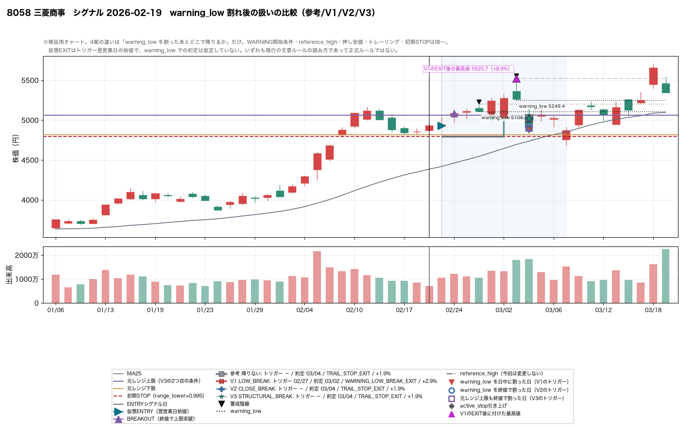
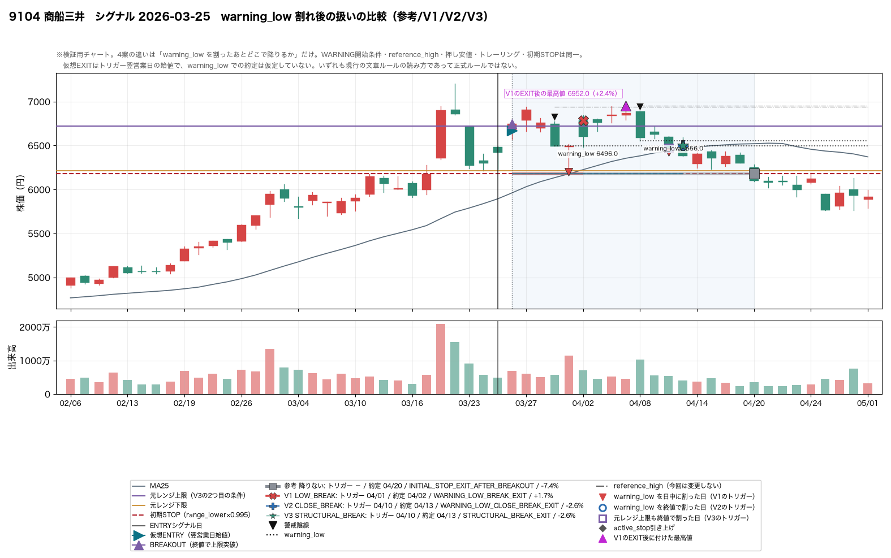
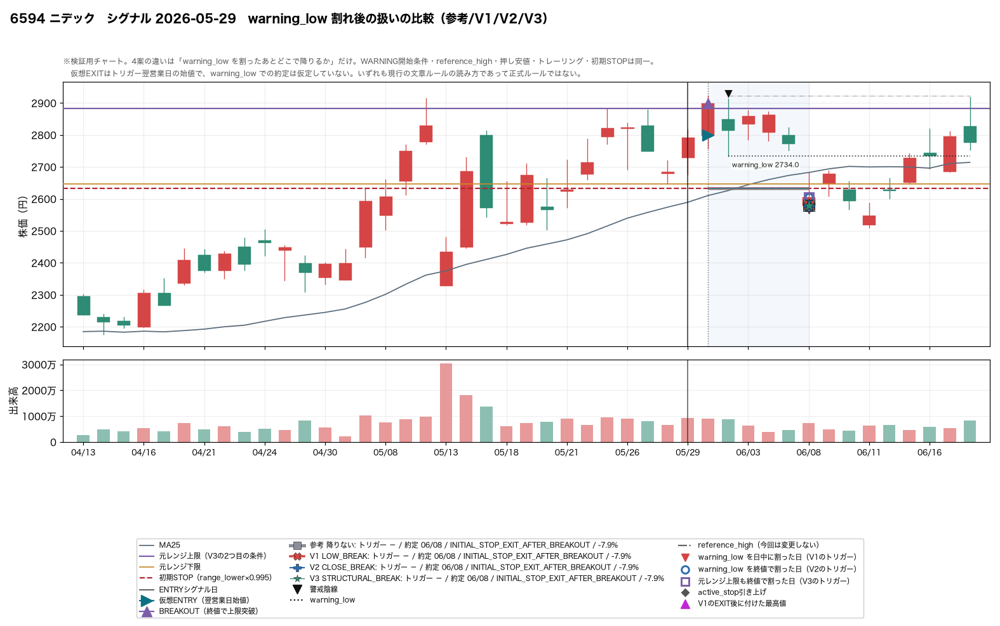
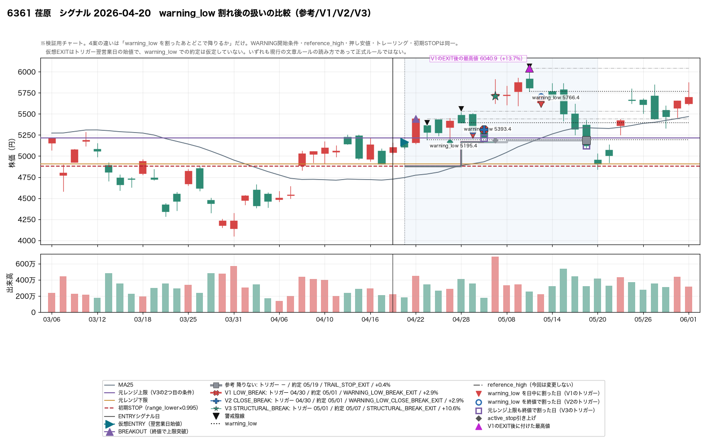
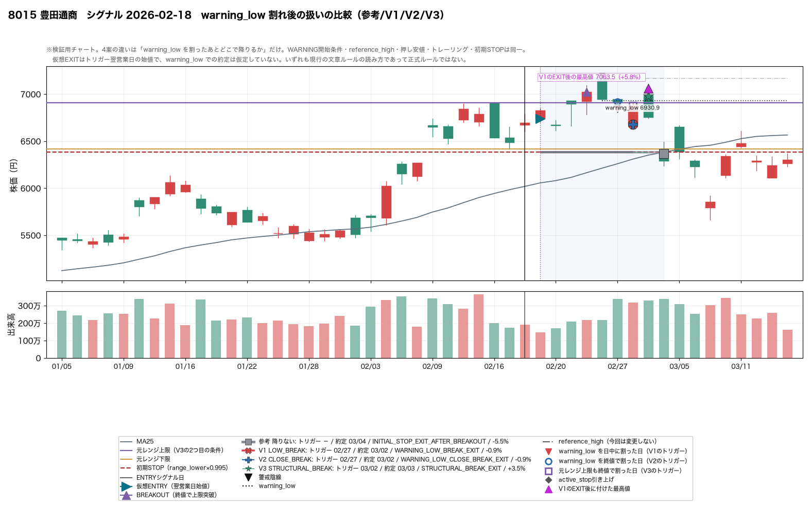
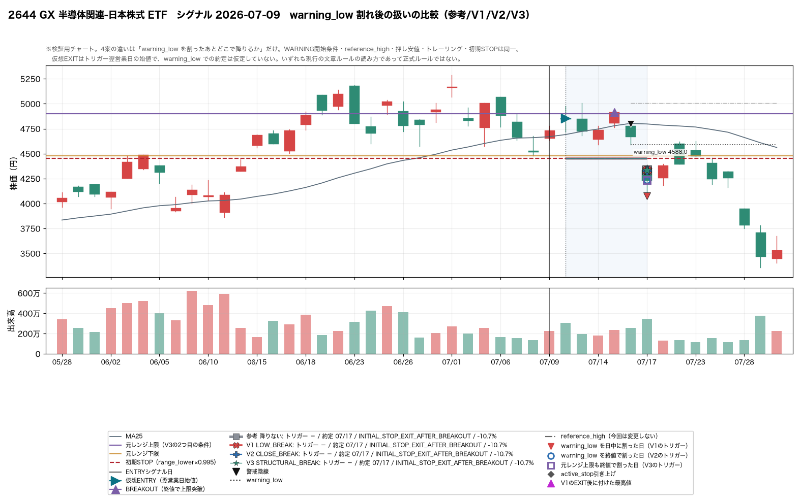


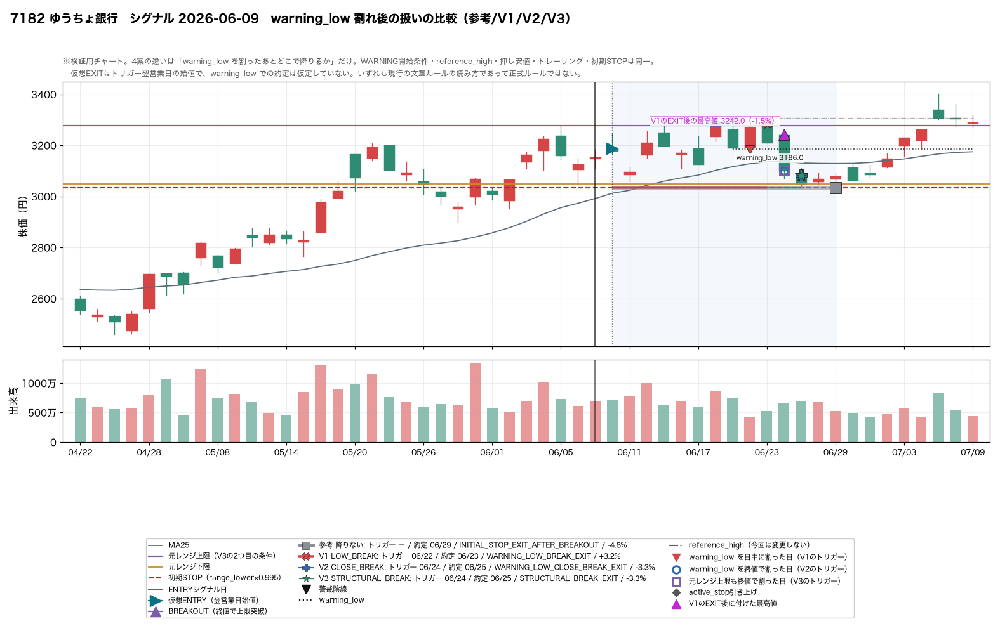
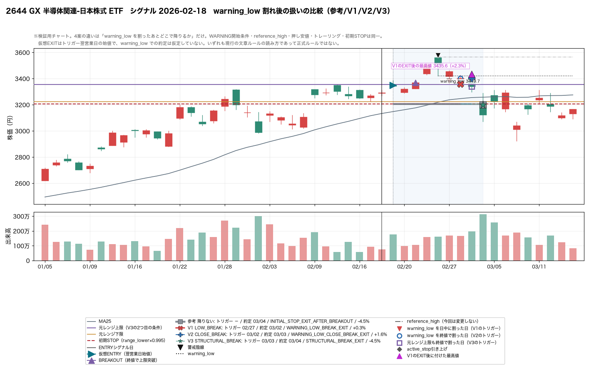
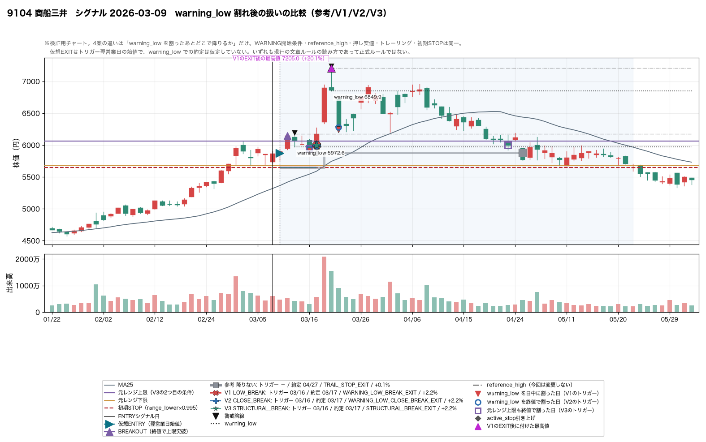
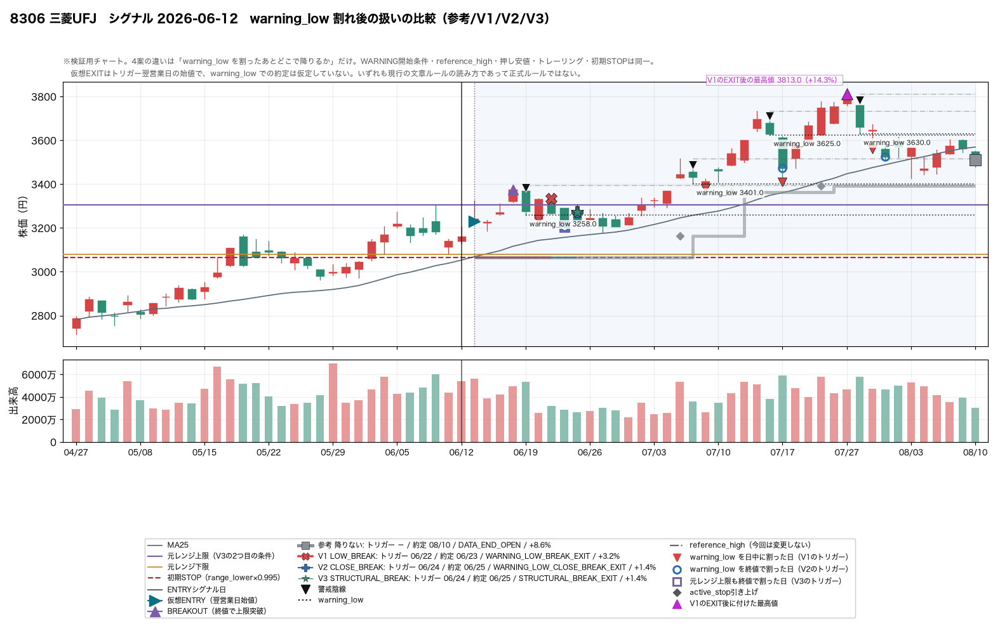


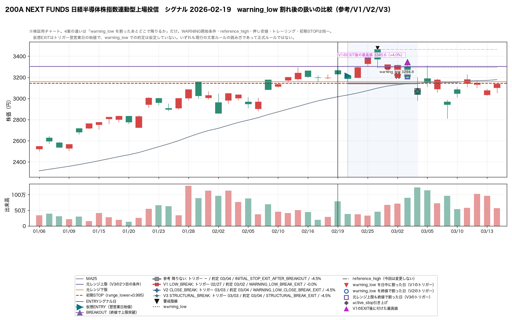
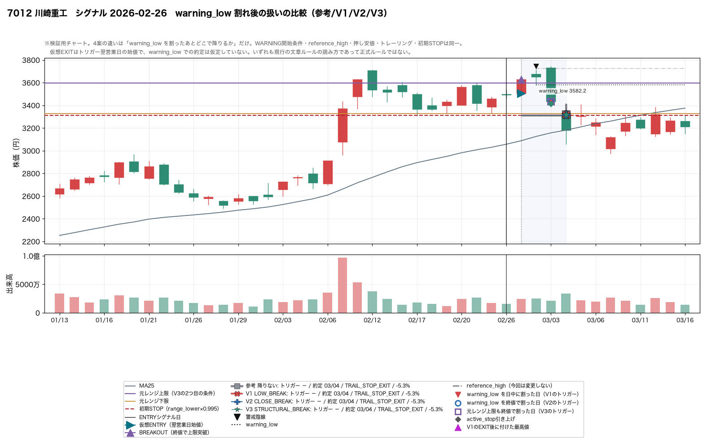
| 確認項目 | 実装上の担保 | テスト |
|---|---|---|
| トリガーはその営業日までのデータだけで判定 | `track_event` は仮想ENTRY日から 1 営業日ずつ前へ進み、その日の足だけで `low < warning_low` / `close < warning_low` / `close < range_upper` を評価する。翌日以降の足はループの中で一度も参照しない。 | test_トリガーはその営業日の足だけで判定する |
| close 確認型の EXIT は翌営業日からのみ実行可能 | CLOSE_BREAK / STRUCTURAL_BREAK は終値が確定して初めてトリガーするので、その日に売ることはできない。仮想EXITは翌営業日の始値に置いている。 | test_close型のEXITは翌営業日始値で約定する |
| 翌営業日始値を未来から事前利用しない | 約定価格はループを抜けたあとの `_resolve_next_open_fill` でだけ埋める。ループ内では `price=None` のトリガーしか作らないので、翌日の始値が判定に混ざる余地がない。 | test_翌営業日始値は判定に使われない |
| EXIT 後の値動きは評価にのみ使用 | EXIT 後にどこまで伸びたかは、追跡が終わったあとに `daily` から集計する。状態機械は EXIT 時点で閉じており、その後の足で挙動が変わることはない。 | test_EXIT後の値動きは状態遷移に影響しない |
| reference_high に未来値を使用しない | `reference_high` は警戒足が出た日までの保有中最高値で確定し、以後書き換えない（今回この定義は変更していない）。 | test_reference_highは4案とも同じで未来を見ない |
| trail stop 更新は既存の prefix invariant を維持 | 押し安値は「警戒足の日から今日まで」の最小値で確定し、引き上げた STOP は翌営業日から有効になる。4 案ともこの扱いは同じ。 | test_prefix不変性_4案いずれでも成立する |
k 本で打ち切って
再実行し、フル実行の結果と一致するかを 4 案すべてで確認している。
トリガー（日付・オフセット）は打ち切っても変わらない。約定（翌営業日始値）だけは
「その営業日がまだ来ていない」場合に fill_pending となるので、
テストでは トリガーの一致 と 約定は None か一致のどちらか を要求している。
これは仕様どおりで、判定に未来を使っていないことの裏返しである。
bars[d+1] で判定するよう
書き換えると look-ahead テストが失敗し、元に戻すと全件通ることを確認している。
break_rule の既定値は
HOLD_UNTIL_STOP（＝前回の CASE3 と同じ挙動）なので、
research/exit_state_machine/ の CSV 7 本と
research/warning_start_study/ の CSV 7 本は
いずれもバイト単位で以前と同一である。
初回の日中割れ当日に終値が戻したのは 8/29 (28%)（8/29）。さらに、WARNING でいる間に終値では一度も割らなかった警戒足は 3/29 (10%)（3/29）。つまり日中割れの大半はその日のうちに終値でも割れており、「下ヒゲだけの割れ」は多数派ではない。
5/26 (19%)（5/26）。残りは同じ日か数日のうちに元レンジ上限の内側まで終値で戻っており、V2 と V3 が実際に分かれるのはこの少数のケースだけ。
利確候補で降りた件数は V1 16 件 → V2 13 件 → V3 13 件（母数 32 件）。減った分は trail STOP か初期STOP での撤退に置き換わる。trail STOP で降りた件数は 参考 7/32 (22%) / V1 2/32 (6%) / V2 5/32 (16%) / V3 5/32 (16%)。V1 はトレーリングが立つ前に降りてしまう。
件数は 参考 13/32 (41%) → V1 0/32 (0%) / V2 5/32 (16%) / V3 7/32 (22%)。最大滞留日数は 参考 25 日 に対し V2 3 日 / V3 3 日。3 案とも滞留は解消する。V1 は定義上ゼロ、V2/V3 に残るのは「終値の確認を待つ」ぶんの数日で、前回のような長期滞留ではない。「割ったのに何も起きず初期STOPまで戻った」件数も 参考 14/32 (44%) → 3 案とも 4/32 (12%) へ減る。
ある。EXIT 価格からさらに +3% 以上伸びたのは V1 6/16 (38%) / V2 4/13 (31%) / V3 3/13 (23%)、EXIT 後の最大上昇率の中央値は V1 +4.90% / V2 +3.02% / V3 +0.26%。V1 がいちばん「まだ上がる場所」で降りている。ただしそれが損につながっているとは限らないのが今回の難しいところで、残った上昇分を trail STOP で取り切れずに吐き出すケースが多いため、結果だけ見ると V1 が勝つ件の方が多い（下の Q8 を参照）。
時点の整合は V2 が最も良い。V2 のトリガーは終値で確定し、その日の引け後に判断して翌営業日の寄りで降りる、という手順にそのまま乗る。V1 は日中に成立するので、日足しか見ない運用では「割ったこと自体を引けまで知り得ない」。実際 V1 のトリガーの 17/29 (59%)（17/29） は寄り付き時点で既に warning_low を下回っており、warning_low で売れたという前提は置けない。V1 を採るなら「事前に STOP 注文を置く」運用が前提になる。
今回の 32 件では「遅すぎる」ほどにはならなかった。V2 と V3 で結果が変わったのは 3 件だけで、V3 が良かったのが 2 件（2 件が V3 最良）、悪かったのが 1 件。最大滞留日数も V3 3 日 で V2 と同じ。理由は §8 のとおりで、終値で warning_low を割った日にはたいてい元レンジ上限も同時に割っているため、V3 の追加条件がほとんど発動しないから。「遅すぎない」のではなく「めったに効かない」と読むのが正確。
最大含み益 +5% 以上（13 件）で残せた割合の中央値は 参考 1%（13件） / V1 10%（13件） / V2 10%（13件） / V3 10%（13件）。+10% 以上（6 件）では V1 18%（6件） / V2 13%（6件） / V3 13%（6件）。どの案でも 8 割以上を吐き出している。warning_low 割れの扱いを変えても、この吐き出しは埋まらない。
翌営業日始値がトリガー基準を下回ったのは V1 10/16 (62%) / V2 5/13 (38%) / V3 5/13 (38%)、ギャップ率の中央値は V1 -1.00% / V2 +0.00% / V3 +0.42%。V2/V3 の方がギャップ耐性は良い。V1 の中央値がマイナスなのは、日中割れの日は引けにかけて崩れることが多く、翌日の寄りが warning_low よりさらに下になるため。V2/V3 は既に安いところでトリガーするので、翌日の寄りとの差は小さい。ただしどちらも最大 4% 前後の下方ギャップは起きており、「warning_low 価格で必ず売れる」前提は置けない。
文章としては書ける。今回の 3 案はいずれも 「日足の確定値だけで一意に判定でき、翌営業日の寄りで実行できる」形になっており、曖昧さは残らない。ただし 32 件のうち結果が変わったのは 8 件だけで、残りは 3 案とも同じ日・同じ価格で降りている。この母数では「どの表現が正しいか」を決める根拠にならない。決めるとすれば、成績ではなく「日足・引け後判断という運用の時点に合うか」という基準になる（Q6）。
材料としては、そちらの方が効きそうに見える。Q8 のとおり、+10% まで伸びた 6 件でどの案も 8 割以上を吐き出しており、この差は warning_low の扱いでは動かない。trail STOP まで到達した件数も参考基準で 7/32 (22%) にとどまる。前回の検証で見つかった「警戒足自身の高値が reference_high になり、再高値更新に天井の更新を要求してしまう」構造は今回も手つかずのまま残っている。ただしこれは本レポートの観察であって、次の作業指示ではない。
残っている問題は 2 つある。(1) V1 の約定前提。日足運用では日中割れを引けまで知り得ないので、V1 を採るなら「STOP 注文を常時置く」という運用側の決めごとが必要になる。これはルールの文言ではなく執行方法の問題。(2) 同日に複数の条件が成立する日の順序。終値割れと reference_high 再突破が同じ日に起きた警戒足が 3/31 (10%)（3/31） あり、今回は「既存の REHIGH ロジックを変更しない」という制約から再高値更新を優先したが、これは選択であって文章ルールが決めていることではない。どちらも今回は決めずに残してある。
| 項目 | 今回の扱い |
|---|---|
| どの EXIT VARIANT を正式ルールにするか | 32 件のうち結果が変わるのは 8 件だけで、成績で決めると過剰最適化になる。決め手にするなら「日足・引け後判断という運用の時点と合うか」であって、リターンではない。 |
| V1 を採る場合の執行方法 | 日中割れは引けまで観測できないので、STOP 注文を常時置くかどうかを運用側で決める必要がある。本検証はどちらも仮定していない。 |
| 終値割れと reference_high 再突破が同日の場合の優先順位 | 今回は既存の REHIGH ロジックを変更しないという制約から再高値更新を優先した。文章ルールはこの順序を決めていない。 |
| reference_high の定義 | 「警戒足発生時点までの保有中最高値」のまま変更していない。利益の吐き出しはここに残っている可能性が高いが、今回は同時に変えていない。 |
| 押し安値・トレーリングの定義 | WARNING 期間中の最安値 × 0.995、上方向のみ。今回いっさい触っていない。 |
| WARNING へ入る条件 | 研究上の基準として VARIANT A に固定した。A を正式採用したという意味ではない。 |
| ファイル | 内容 |
|---|---|
report.html | このレポート |
variant_comparison.csv | 4 案の横並び比較（§11/§12/§13/§14） |
break_reality.csv | §8 warning_low 割れの実態 |
events.csv | 4 案 × 32 件のイベント（break_rule 列で区別） |
warning_breaks.csv | 警戒足ごとの割れ方の観測記録（日中 / 終値 / 上限） |
summary.csv | 案ごとの詳細集計 |
revival_cases.csv | §9 V1 なら降りるが V2/V3 は保有を続けた件 |
waited_too_long_cases.csv | §10 待った結果、悪化した件 |
naturalness.csv | §15 割れ方の形 × どの案が良かったか |
representative_charts/ | §16 の代表チャート |